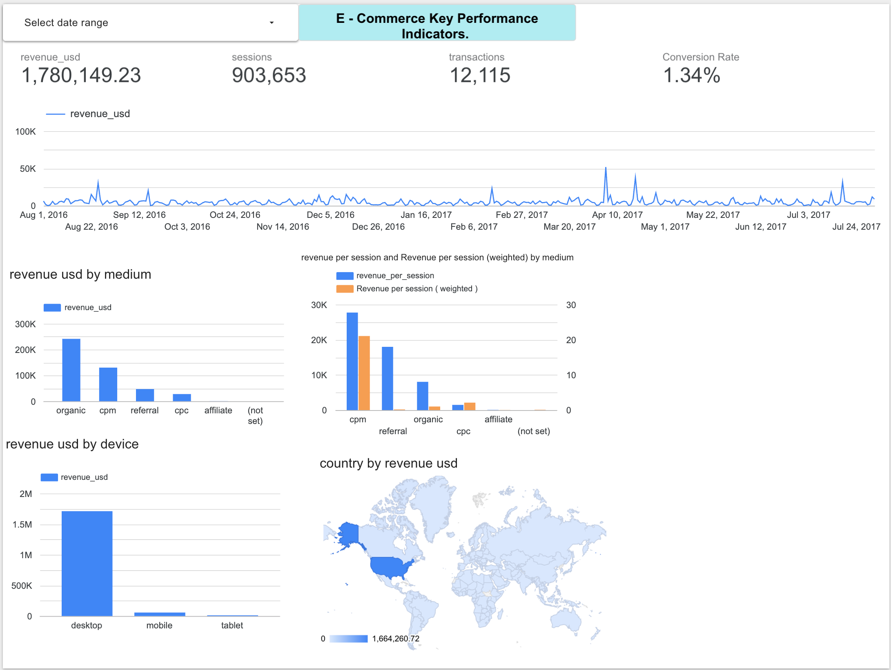

I am a data analyst focused on turning raw data into clear business insights. My portfolio features projects in SQL, Python, BigQuery, dashboard development, and analytics storytelling.
An end-to-end analytics project using the Google Analytics public ecommerce dataset in BigQuery to evaluate channel, device, and traffic-source performance. The goal was to identify which acquisition paths generated the strongest revenue outcomes and where conversion opportunities existed.

Business Question
Which marketing channels, traffic sources, and device categories drive the most ecommerce revenue, and where should a business focus optimization efforts to improve conversions and return on ad spend?
What I Did
Tools & Skills
Project Outcome
This project demonstrates my ability to work with raw analytics data, answer business questions with SQL, build clear dashboards, and communicate insights that support data-driven decision-making.